Full end-to-end UI audit of the six core screens, run with GPT-6 Astra against live desktop + mobile captures of DEV, concepts art-directed and mocked up by Jarvis. Each section: what's wrong today → the redesign concept → quick wins we can ship immediately. Reply with the section names you approve (or tweaks) and I'll start building.
Before = today's live UIAfter = proposed redesign (visual mockup)Audit findings
⭐ FEATURED · Full Proposal Builder Redesign Design language: “Fieldline”
Astra's ground-up redesign of the entire builder, engineered for iPad + iPhone perfection. Process: Astra first read the actual builder source and produced a 1,464-line functionality inventory — the contract that guarantees nothing is lost (every pricing rule, validation, flat-rate flow, change-order mode, SnapScan path, autosave/offline behavior mapped to a home in the new design). Then it designed against that contract: a focused shell, a room navigator beside the work on iPad, one-hand reach on iPhone, honest save states, and a motion language specced to the millisecond (180ms step transitions, 240ms sheets, 60fps on field iPads, tabular numerals so money never jitters).
Fieldline — iPad (1194px) · Rooms workspacemockup
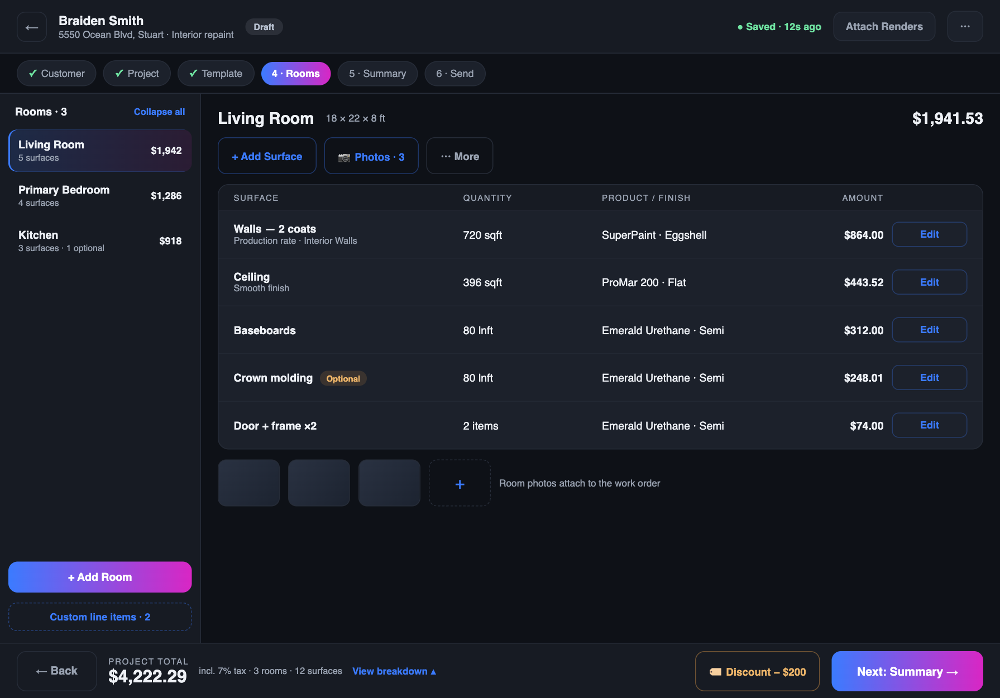
Fieldline — iPhone · Roomsmockup
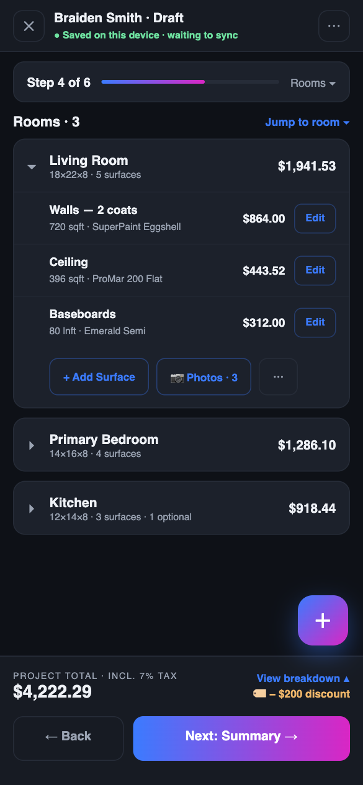
Fieldline — iPhone · Price breakdown sheetmockup
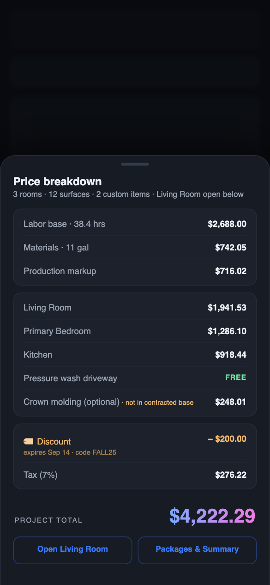
Before — iPad todaylive capture
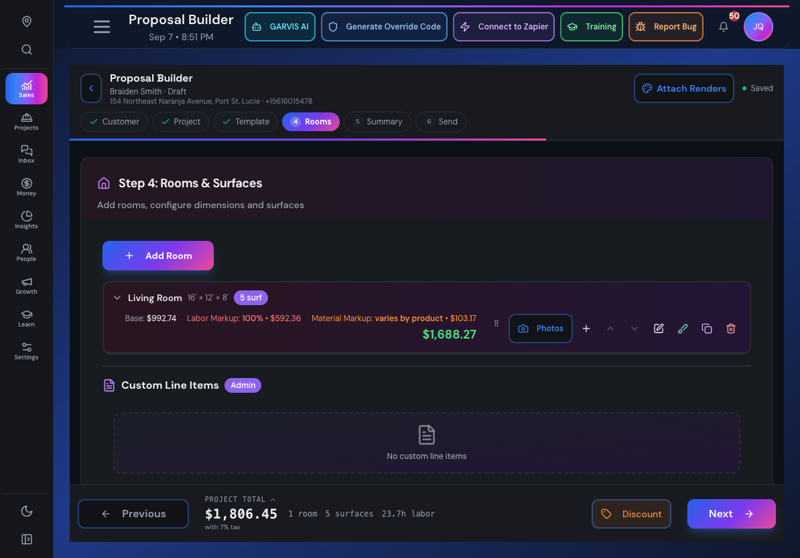
Before — iPhone todaylive capture
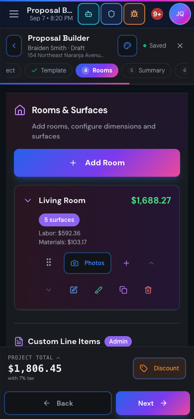
What Fieldline changes (highlights)
One focused shell replaces four stacked headers — utilities (GARVIS, Zapier, override codes, training) move to a Tools menu, customer + save state stay visible
iPad: 240px room navigator beside the working pane — measure, edit surfaces, photos without leaving the room
iPhone: room cards with thumb-reach actions, a floating Add button, and "Step 4 of 6" progress that never clips
Tap the total → full price breakdown sheet: labor/materials/markup, per-room totals, FREE items, optional scope clearly excluded from base, discount w/ expiry
Honest save states: "Saved on this device · waiting to sync" ≠ "Saved" — field reps always know what's real
📄 Full deliverables saved alongside this page: fieldline-design-spec.md (1,204 lines incl. animation tokens, component system, functionality preservation map, phased build plan) and builder-functionality-inventory.md (the 1,464-line contract). Approve "Fieldline" and I start with the phased build — step 4 (Rooms) first behind a feature flag.
1 · Sales Home Concept: “Today's Job Desk”
The sales landing screen isn't a dashboard — it drops straight into the project-type chooser. No daily metrics, appointments, or follow-ups anywhere.
Two navigation rails eat 360px (25% of the screen) while the center sits mostly empty; header is crowded with utility buttons (Zapier, override codes, bug report) that outrank sales actions.
On mobile, picking one of three project types requires scrolling.
Before — today/sales
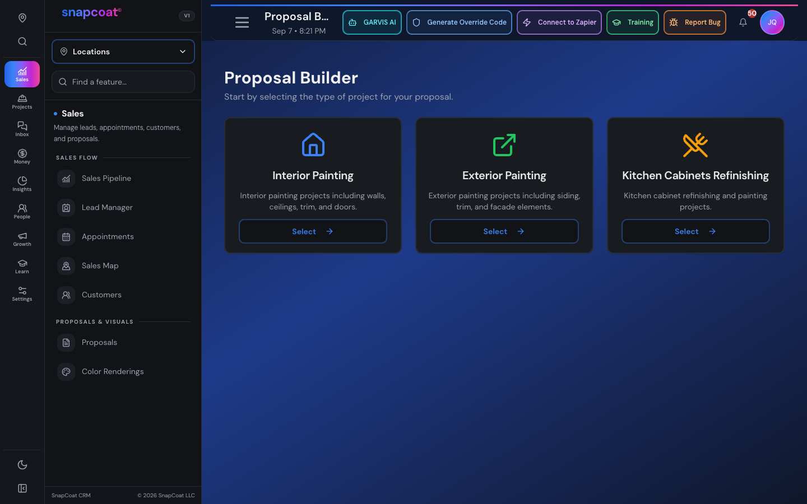
After — Today's Job Deskmockup
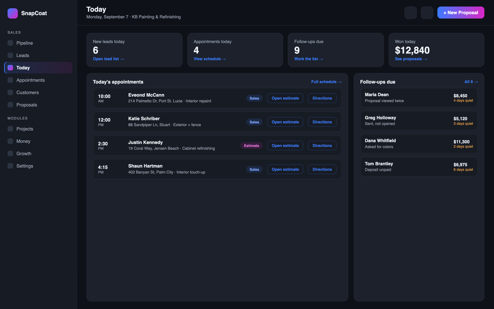
Quick wins (shippable now)
Compact, fully-clickable project-type rows on mobile (all 3 above the fold)
Collapse header utilities into one labeled Tools menu
Single merged sidebar with a clear active state
2 · Sales Pipeline Concept: “Next Coat”
The actual pipeline starts 815px down the screen — deal cards aren't even visible on load; reporting panels come first.
Mobile truncates the numbers that matter ("$200,38…", "Untouched in la…").
"Needs Follow-up: 1" — the one thing worth acting on — gets the same weight as empty metrics.
Before — today/sales/pipeline
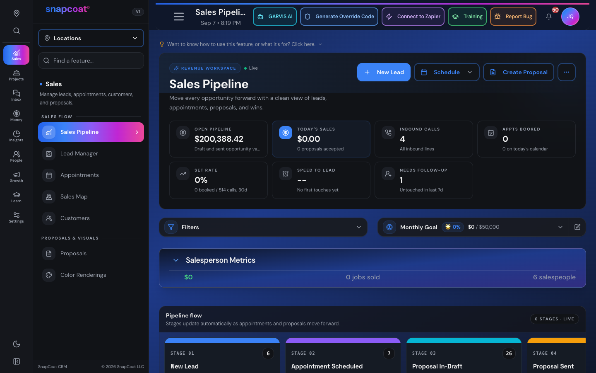
After — Next Coatmockup
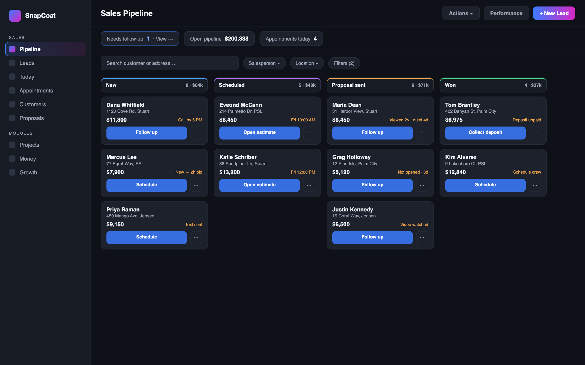
Quick wins
Un-truncate money values on mobile; Open Pipeline spans full width
Collapse Salesperson Metrics by default
"Needs Follow-up" becomes a tappable filter with emphasis
Every deal card gets ONE contextual next-action button
3 · Lead Manager Concept: “Job-Ready Leads”
Zero leads visible in the first 900px — headers, metrics, and banners introduce the page five different ways first.
The hot-lead banner is huge but names no customer and offers no action.
Desktop wastes a full detail-panel opportunity — every lead requires navigating away.
Before — today/sales/lead-manager
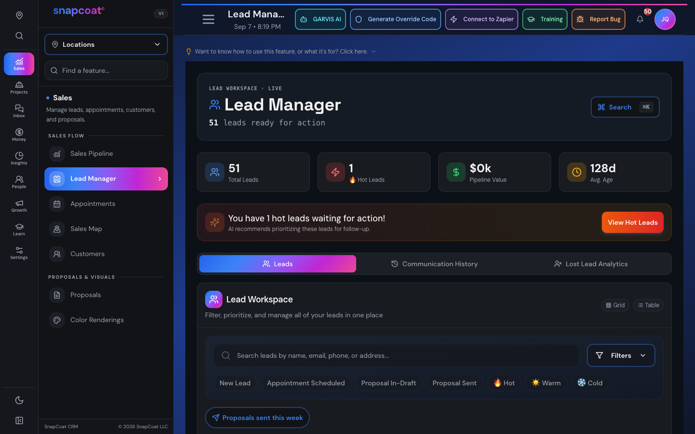
After — Job-Ready Leadsmockup
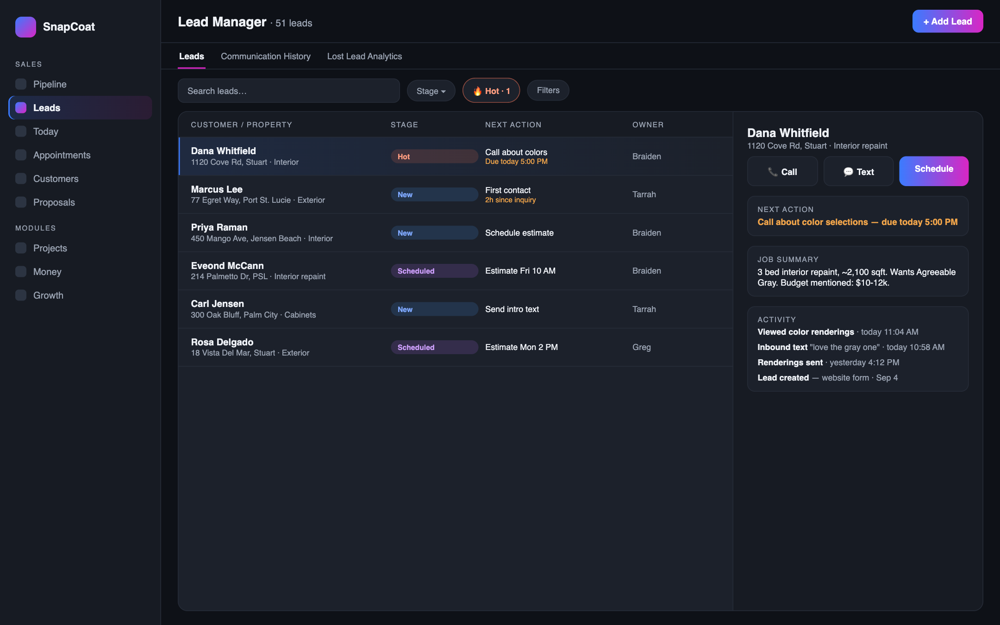
Quick wins
Hide metric cards on mobile; single summary row on desktop
Hot banner → "1 hot lead needs follow-up" filter chip
Rename stage chip "New Lead" → "New"; clear Grid/Table active state
4 · Proposals List Concept: “Close Next”
The list starts at y=820 on desktop; on mobile you can't even reach search in the first screen.
Six metric cards eat 434px of mobile space — "Sent: 0" gets as much room as 34 drafts.
No contextual actions — every proposal is a hunt through menus to advance it.
Before — today/sales/proposals
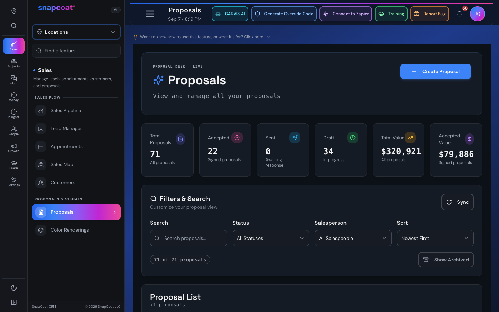
After — Close Nextmockup
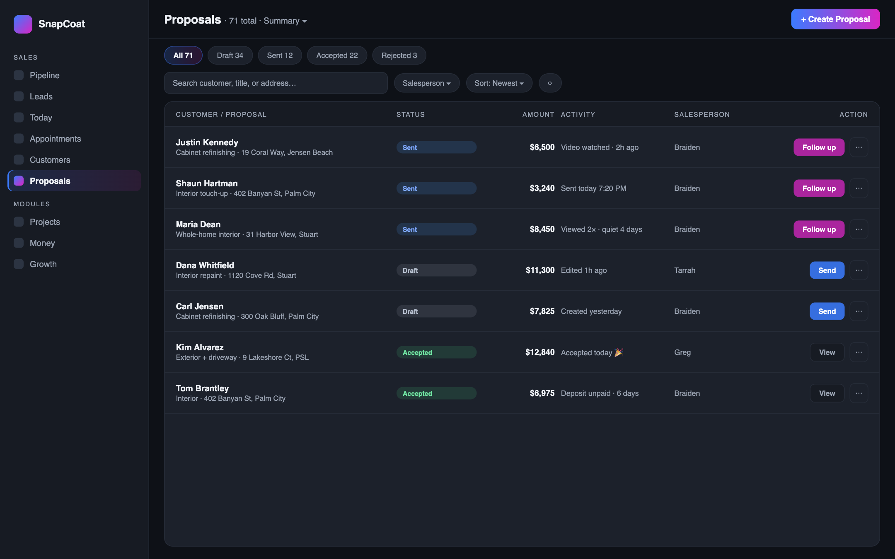
Quick wins
Metric cards → status filter chips with counts (Draft 34 · Sent · Accepted)
Contextual row actions: Send for drafts, Follow up for sent, View for accepted
Kill the hero card; search always visible near the top
5 · Proposal Builder Concept: “Quote Desk”
Mobile relabels "Labor Markup" as just "Labor" — a rep could read markup as cost. Same money, different meaning per device.
Room rows squeeze pricing + ~9 controls into one line; the five existing surfaces stay hidden while an empty "no custom items" panel gets prime space.
The mobile stepper clips "Project" and "Send" — no sense of where you are in the flow.
Before — today/sales/proposal-builder-redesign
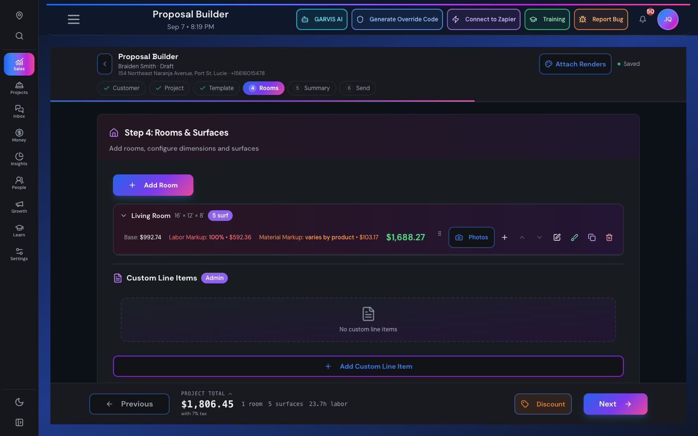
After — Quote Deskmockup
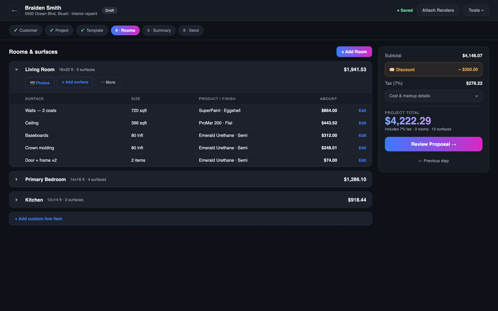
Quick wins
Fix mobile labels: "Labor markup" / "Material markup" (money must read identically everywhere)
"Next" → "Review proposal" on the rooms step
Mobile stepper → "Step 4 of 6 · Rooms" + progress bar
Kill the empty custom-items panel; one compact add row
6 · Appointments Concept: “Book & Go”
There is no visible "New appointment" button — Refresh, Map and Block Off Time all outrank the primary action.
The calendar grid starts ~450px down; seven saturated weekday color blocks fight the appointment data.
Empty days burn a full screen panel that only says "use the arrows".
Before — today/sales/appointments
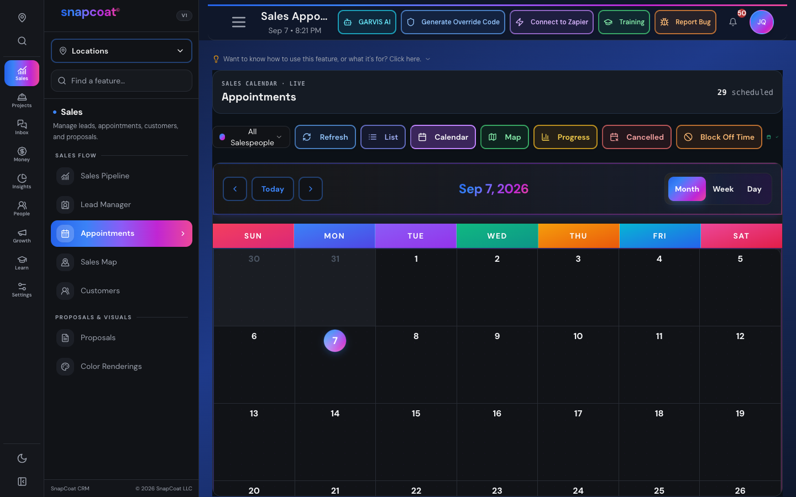
After — Book & Gomockup
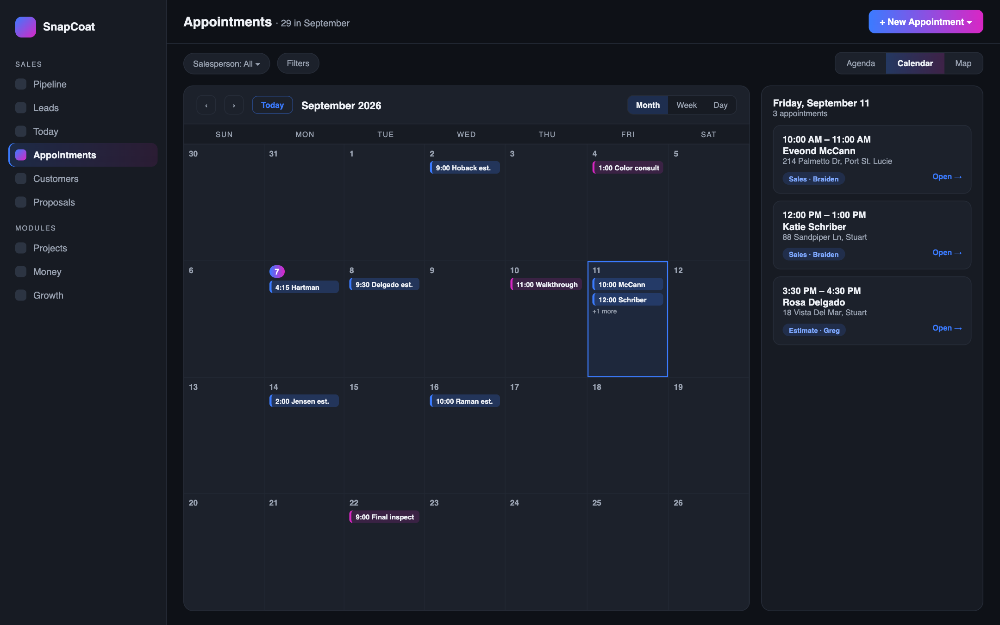
Quick wins
Add a real "+ New Appointment" primary button (with Block Off Time in its dropdown)
Empty day → compact "No appointments · Book one → · Next: Sep 8"
✅ To approve: text me the numbers/names you want built (e.g. "build 1, 4, and the quick wins on everything"). Mockups are directional — real builds keep every existing feature and both themes. Full Astra audit reports are saved alongside this page.